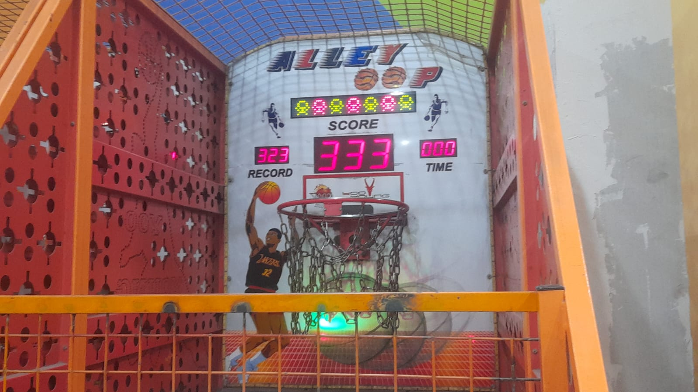
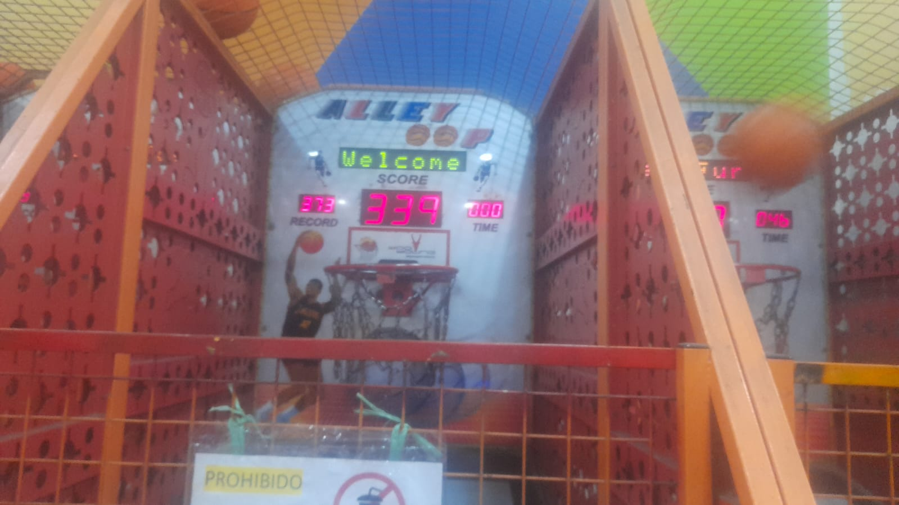
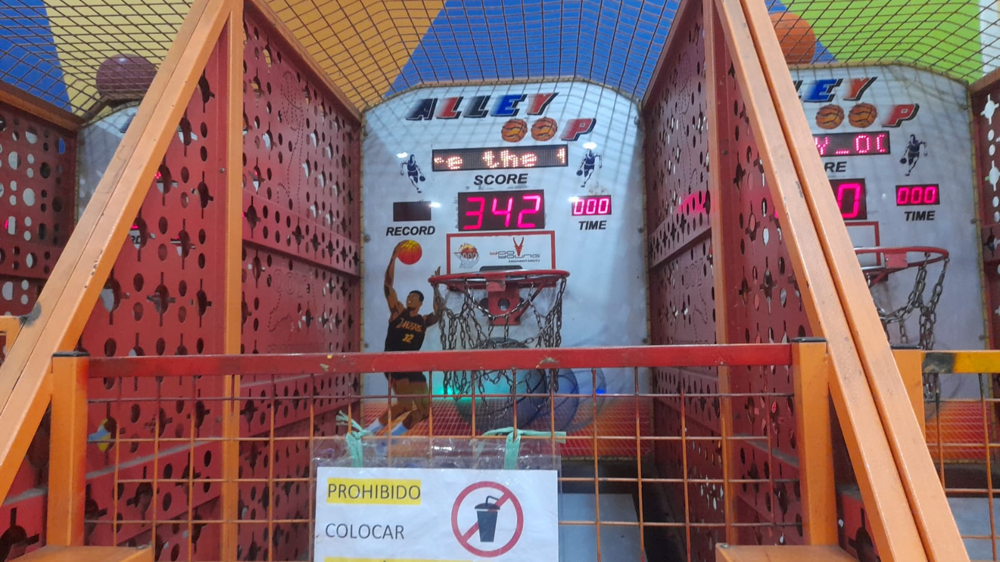

Récord actual
Nuestro marcador más alto en el Alley Oop
Cómo fue subiendo
-

333Primer registro -

339+6 que el anterior -

342+3 y es el récord actual
Nuestro marcador más alto en el Alley Oop


